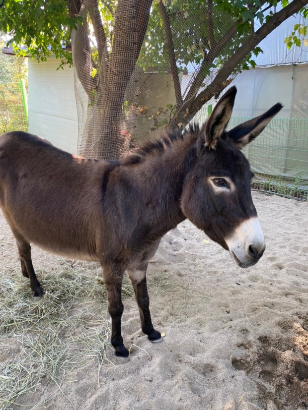
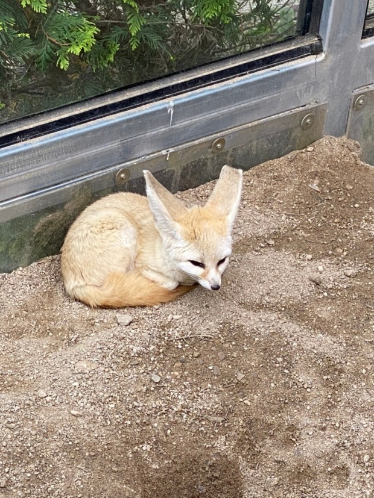
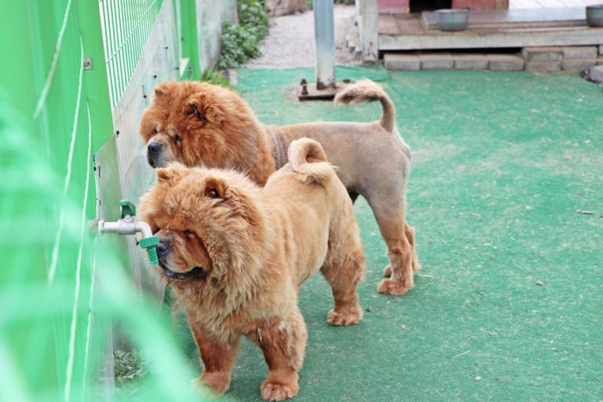

관광농원인 허브아일랜드(329,000㎡) 내 식물원과 전시실(110,000㎡)을 갖춘 1종 전문박물관(식물원)으로 등록한 전국 최대 규모의 허브 식물원이다.
허브식물박물관 내에는 250여종의 허브와 다양한 식물들이 식재되어 있어 사계절 내 화사하고 푸른식물을 관람할 수 있다.
허브식물박물관은 총4개의 실내 전시관과 야외 전시장으로 구성되어 있다.
각 전시관마다 중심이 되는 허브와 식물들이 있어 관람의 재미와 함께 아이들의 생태체험 교육의 장은 물론 힐링공간으로 활용되고 있다.
고요한 자연 속 감동과 힐링을 선사한느 경기도 가평 '아침고요수목원'입니다.
대한민국 자연의 아름다움을 곡선과 비대칭의 균형미로 표현된 23개의 주제 정원과 함께 조화롭게 연결된 산책로는
어디로 발걸음을 두어도 자연스럽게 연결되어있다.
아름다운 가평의 자연과 어우러진 다양한 꽃과 나무는 물론 최근 개장된 아침고요가족동물원에서는
귀여운 동물 친구들까지 한대 모여 만나볼수 있다.
  
아침에 피어나는 물 안개와 우직하게 자리를 지키고 있는 옛 나루터
아침 햇살을 가르는 철새 무리와 둥근 해와 함께 솟아오르는 황포, 돛 강으로 늘어진
수양버들까지 함께 어우러져 아름다운 풍경을 자랑하는 경기도 '양평 두물머리'입니다.
북한강과 남한강의 만남이 이루어지는 곳이자 한강의 출발점인 두물머리는 예로부터 풍광이 아름답기로 유명한곳이다.
강가 마을의 특유의 아름다운 경관으로 각종 드라마, 영화 촬영장소로 널리 알려지며 관광객으로 부터 사랑을 받는 대한민국 대표 생태 관광지 이다.
핫도그 맛집으로 유명하다ㅎ!!
''용인 한국민속촌'은 전국 각지에서 옮겨온 다양한 모습의 전통가옥과
관청 건물들을 토대로 조선시대 생활상을 재현한 역사 테맡파크로 한국의 전통문화를 배우고
체험할 수 있는 복합 문화 광광지 이다!
생생한 문화체험은 물론 아름다운 자연경관이 함께하여 더욱 아름다운 이곳은
절기에 따라 만날수 있는 전통 세시풍속 행사와 농경 행사, 각종 전통공예와 전통생활문화 체험을 만날수 있다.
뿐만 아니라 곳곳에 숨어있는 조선시대 캐릭터들과 대화를 나눔으로 민속촌 인싸가 될수 있다.